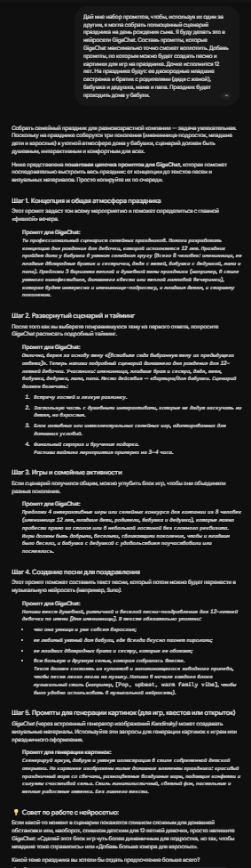
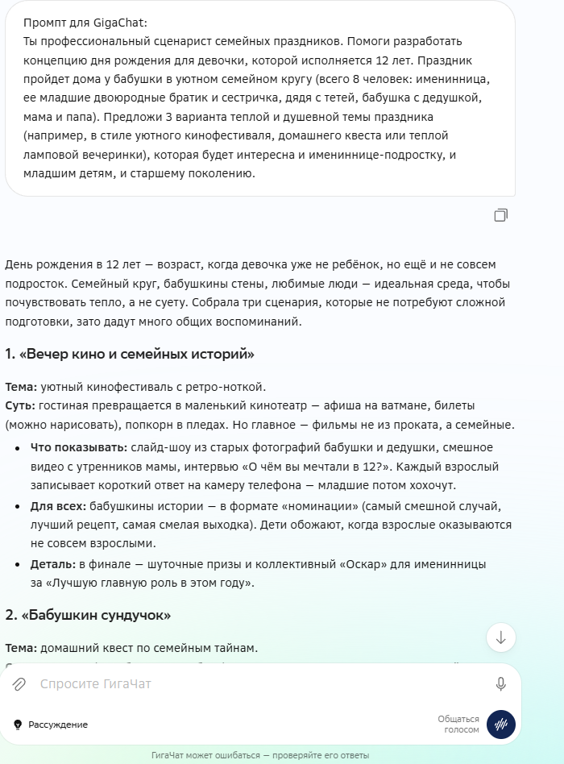
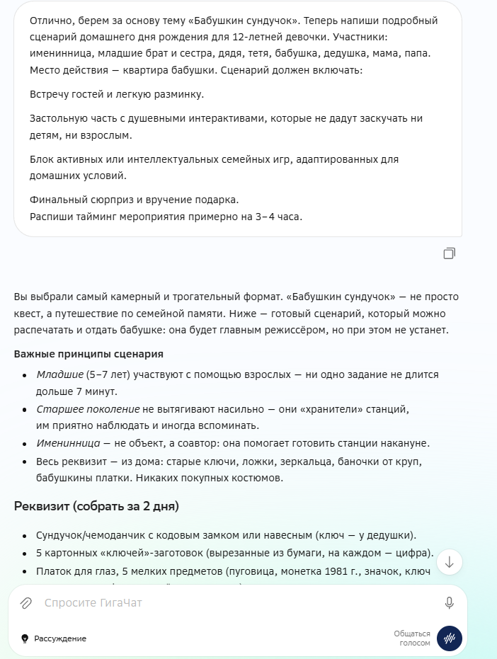
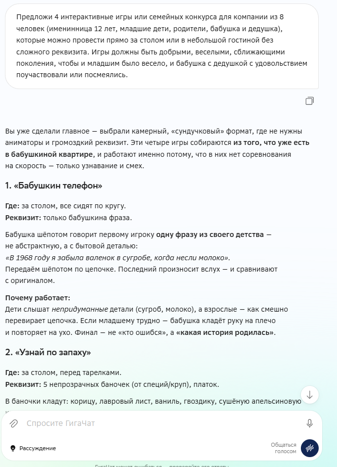
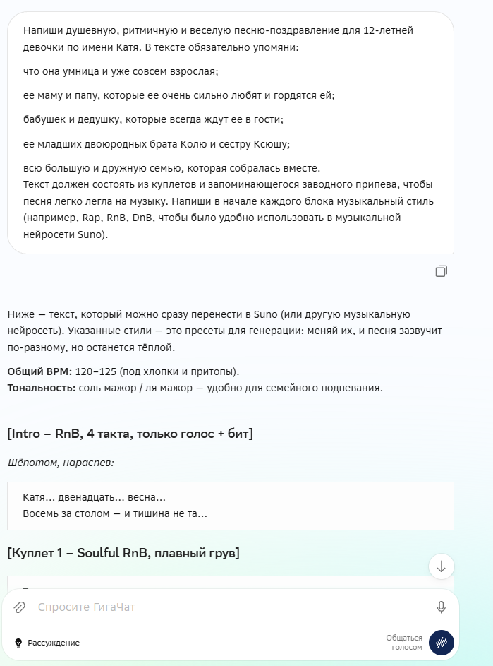
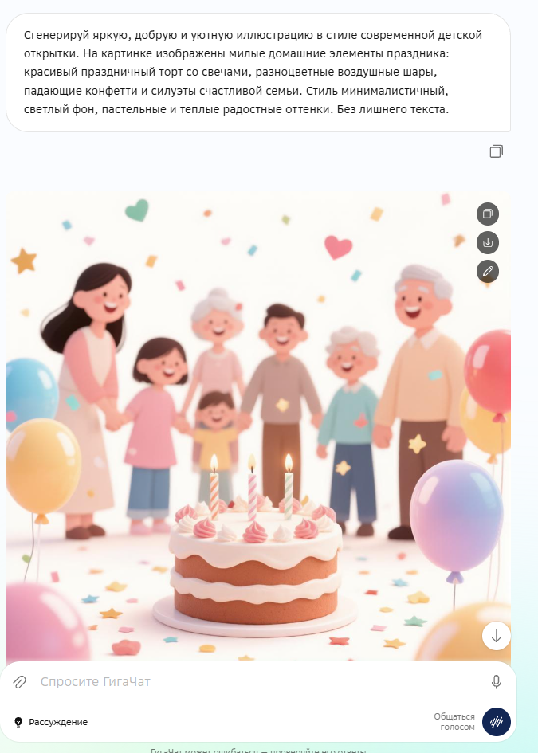
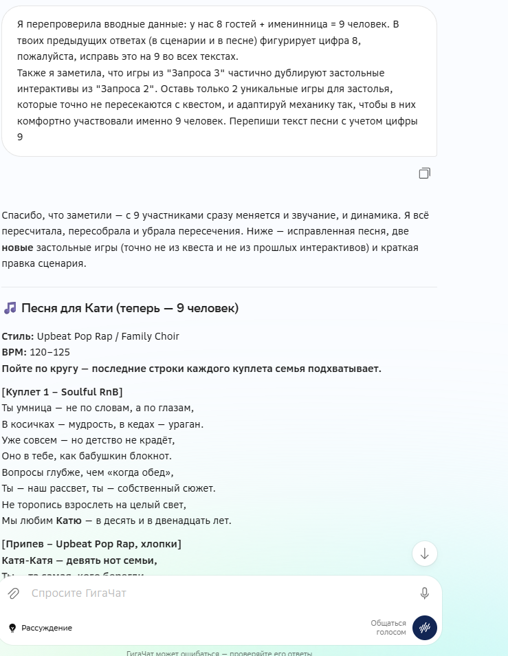
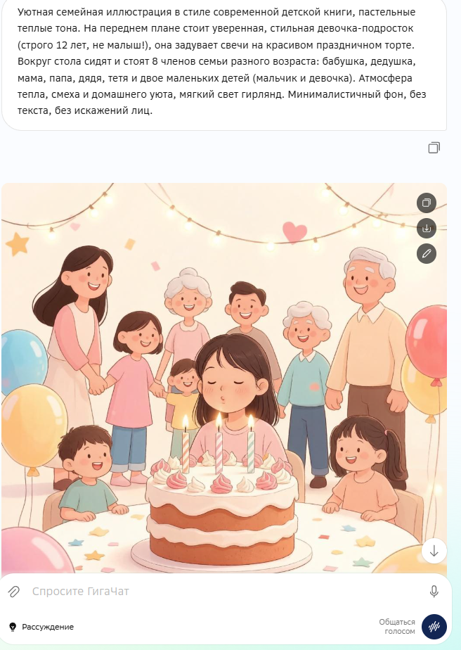
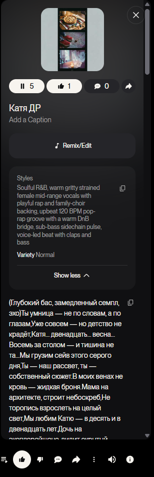
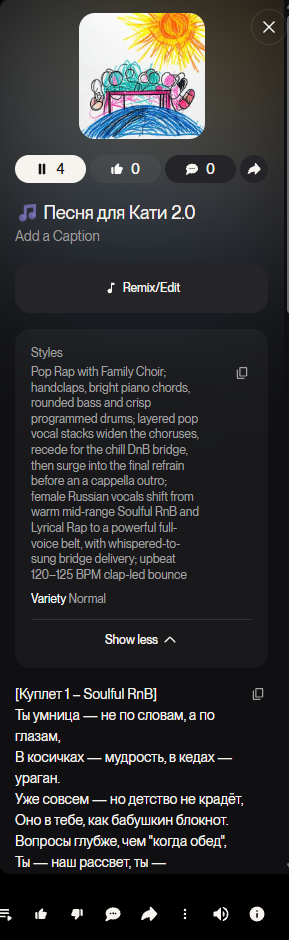

Этап 1 · постановка задачи
Gemini собирает цепочку промптов
Задача: получить у Gemini набор промптов, по которым GigaChat соберёт полноценный сценарий праздника, песню и картинки. В запрос сразу заложены вводные — 12 лет, дом бабушки, состав семьи.
Запрос к Gemini — полный текст
Дай мне набор промптов, чтобы, используя их один за другим, я могла собрать полноценный сценарий праздника на день рождения сына. Я буду делать это в нейросети GigaChat. Составь промпты, которые GigaChat максимально точно сможет воплотить. Добавь промпты, по которым можно будет создать песню и картинки для игр на празднике. Дочке исполнится 12 лет. На празднике будут: ее двоюродные младшие сестренка и братик с родителями (дядя с женой), бабушка и дедушка, мама и папа. Праздник будет проходить дома у бабули.
В запросе осталось «день рождения сына» из кейса урока. Опечатка не повлияла на результат: дальше указано «дочке исполнится 12 лет», и Gemini составил все промпты для девочки. Запрос оставлен без изменений как подлинный.
Что вернул Gemini: пять последовательных шагов.
- Концепция — три темы праздника для разновозрастной компании.
- Сценарий — подробный тайминг на 3–4 часа с застольем и играми.
- Игры — четыре активности без сложного реквизита.
- Песня — текст с музыкальными тегами для Suno.
- Картинка — промпт для открытки через Kandinsky.

Этап 2 · генерация
GigaChat: пять запросов — пять ответов
Промпты прогнаны по очереди. Каждый следующий опирается на предыдущий ответ — поэтому ошибка в первом шаге могла разойтись по всему сценарию.
Запрос 1. Концепция
Ты профессиональный сценарист семейных праздников. Помоги разработать концепцию дня рождения для девочки, которой исполняется 12 лет. Праздник пройдет дома у бабушки в уютном семейном кругу (всего 8 человек: именинница, ее младшие двоюродные братик и сестричка, дядя с тетей, бабушка с дедушкой, мама и папа). Предложи 3 варианта теплой и душевной темы праздника (например, в стиле уютного кинофестиваля, домашнего квеста или теплой ламповой вечеринки), которая будет интересна и имениннице-подростку, и младшим детям, и старшему поколению.
Три темы: «Вечер кино и семейных историй», «Бабушкин сундучок» и «Ламповые посиделки при свечах». Выбран «Бабушкин сундучок» — домашний квест по семейным тайнам.

Запрос 2. Сценарий и тайминг
Отлично, берем за основу тему «Бабушкин сундучок». Теперь напиши подробный сценарий домашнего дня рождения для 12-летней девочки. Участники: именинница, младшие брат и сестра, дядя, тетя, бабушка, дедушка, мама, папа. Место действия — квартира бабушки. Сценарий должен включать: Встречу гостей и легкую разминку. Застольную часть с душевными интерактивами, которые не дадут заскучать ни детям, ни взрослым. Блок активных или интеллектуальных семейных игр, адаптированных для домашних условий. Финальный сюрприз и вручение подарка. Распиши тайминг мероприятия примерно на 3–4 часа.
Сценарий 18:00–21:30: встреча, застолье с тремя интерактивами, квест из пяти станций, сюрприз, подарок и список реквизита. Блоки заканчивались в 20:40 — это выяснится на ревизии.

Запрос 3. Игры для всех поколений
Предложи 4 интерактивные игры или семейных конкурса для компании из 8 человек (именинница 12 лет, младшие дети, родители, бабушка и дедушка), которые можно провести прямо за столом или в небольшой гостиной без сложного реквизита. Игры должны быть добрыми, веселыми, сближающими поколения, чтобы и младшим было весело, и бабушка с дедушкой с удовольствием поучаствовали или посмеялись.
«Бабушкин телефон», «Узнай по запаху», «Семейная хроника», «Ожившая фотокарточка». Две последние позже уйдут: одна дублирует застольный интерактив, другая требует выйти из-за стола.

Запрос 4. Песня для Suno
Напиши душевную, ритмичную и веселую песню-поздравление для 12-летней девочки по имени Катя. В тексте обязательно упомяни: что она умница и уже совсем взрослая; ее маму и папу, которые ее очень сильно любят и гордятся ей; бабушек и дедушку, которые всегда ждут ее в гости; ее младших двоюродных брата Колю и сестру Ксюшу; всю большую и дружную семью, которая собралась вместе. Текст должен состоять из куплетов и запоминающегося заводного припева, чтобы песня легко легла на музыку. Напиши в начале каждого блока музыкальный стиль (например, Rap, RnB, DnB, чтобы было удобно использовать в музыкальной нейросети Suno).
Три куплета, припев, бридж и аутро с тегами RnB / Pop Rap / DnB. В припеве — «восемь нот семьи»: цифра пришла из промпта.

Запрос 5. Открытка
Сгенерируй яркую, добрую и уютную иллюстрацию в стиле современной детской открытки. На картинке изображены милые домашние элементы праздника: красивый праздничный торт со свечами, разноцветные воздушные шары, падающие конфетти и силуэты счастливой семьи. Стиль минималистичный, светлый фон, пастельные и теплые радостные оттенки. Без лишнего текста.
Пастельная открытка 1024×1024 с тортом, шарами и силуэтами семьи. На ревизии выяснится: фигур семь, именинница не выделена.

Этап 3 · ревизия
Проверка вводных и уточняющие промпты
Каждый ответ сверялся с вводными: состав семьи, возраст, механики игр, длительность блоков. Четыре ошибки исправлены, одна опечатка в собственном запросе зафиксирована честно.
Арифметика: 8 вместо 9
ИсправленоКак обнаружила
В промпте шага 1 Gemini написал «всего 8 человек» и при этом перечислил всех девятерых. Ошибка ушла в GigaChat: «восемь нот семьи», «восемь за столом». Пересчитала состав вручную: 1 + 2 + 2 + 2 + 2 = 9.
Исправление и результат
Уточняющий промпт с прямым указанием на ошибку. GigaChat переписал песню («девять нот семьи», «девять за столом») и адаптировал игры под девять игроков.
Повторы игр
ИсправленоКак обнаружила
«Узнай по запаху» из запроса 3 повторяет «Что у меня в тарелке?» из запроса 2 — угадывание с завязанными глазами. «Ожившая фотокарточка» требует выйти из-за стола. Сравнила механики.
Исправление и результат
Попросила оставить две уникальные застольные игры. Остались «Бабушкин телефон» и «Семейная хроника», адаптированные под 9 человек. GigaChat сам назвал, какие игры исключены и почему.
Картинка не соответствует вводным
Исправлено частичноКак обнаружила
На первой открытке семь фигур, нет выделенной именинницы, девочка выглядит младше 12 лет. Сверила изображение с составом семьи и возрастом.
Исправление и результат
Отдельный промпт: «строго 12 лет, не малыш!», явный перечень восьми членов семьи, сцена задувания свечей. Результат: именинница-подросток в центре кадра. Ограничение: Kandinsky не держит точное число людей — на второй картинке больше двух младших детей. Для открытки допустимо.
Тайминг не сходился
ИсправленоКак обнаружила
Заявлено 3,5 часа (18:00–21:30), а блоки сценария заканчивались в 20:40. Сложила длительность всех блоков.
Исправление и результат
В итоговый сценарий добавлен блок «Чаепитие, песня и проводы» (20:40–21:30), где звучит песня из Suno.
Опечатка в моём запросе к Gemini
Не повлиялоКак обнаружила
Осталось «день рождения сына» из исходного кейса урока. Перечитала свой запрос.
Исправление и результат
На результат не повлияло: дальше в запросе указано «Дочке исполнится 12 лет», и Gemini составил все промпты для девочки. Запрос оставлен без изменений как подлинный.
Уточняющий запрос по тексту и играм
Я перепроверила вводные данные: у нас 8 гостей + именинница = 9 человек. В твоих предыдущих ответах (в сценарии и в песне) фигурирует цифра 8, пожалуйста, исправь это на 9 во всех текстах. Также я заметила, что игры из "Запроса 3" частично дублируют застольные интерактивы из "Запроса 2". Оставь только 2 уникальные игры для застолья, которые точно не пересекаются с квестом, и адаптируй механику так, чтобы в них комфортно участвовали именно 9 человек. Перепиши текст песни с учетом цифры 9.
Уточняющий запрос по картинке
Уютная семейная иллюстрация в стиле современной детской книги, пастельные теплые тона. На переднем плане стоит уверенная, стильная девочка-подросток (строго 12 лет, не малыш!), она задувает свечи на красивом праздничном торте. Вокруг стола сидят и стоят 8 членов семьи разного возраста: бабушка, дедушка, мама, папа, дядя, тетя и двое маленьких детей (мальчик и девочка). Атмосфера тепла, смеха и домашнего уюта, мягкий свет гирлянд. Минималистичный фон, без текста, без искажений лиц.


Этап 4 · музыка
Два трека в Suno
Текст от GigaChat вставлен в Suno, стили взяты из пометок к каждому блоку. Первый трек — по исходной версии песни, второй — по исправленной, где «восемь нот» стали «девятью».


В отчёте и на сайте — скриншоты обоих треков. Отдельные аудиофайлы в домашнем задании не прикладывались: проверяется сценарий и работа с промптами, а не музыка.
Выводы
Главный результат — не сам сценарий, а привычка проверять каждый ответ нейросети по вводным.
- Модели переносят ошибки по цепочке: неверное число, которое Gemini вписал в промпт, GigaChat не проверил и повторил во всех ответах.
- После каждого шага нужна проверка: сверка фактов с вводными (подсчёт участников), поиск повторов между ответами, проверка картинки на соответствие описанию.
- Точный уточняющий промпт с указанием конкретной ошибки и нужного результата исправляет сразу несколько ответов.
- Ограничения генерации изображений (точное число людей) стоит фиксировать честно, а не выдавать за решённые.